Fairy-Core is an aesthetic that is reminiscent of the magical fairytales I used to read as a kid. The visual elements surround nature, fairies, whimsical creatures, and animals, often taking place in otherworldly settings. I chose this theme because I grew up watching a ton of barbie movies, and I used to be jealous of the magical superpowers that all the characters had; I would see different creatures sore through the sky, flapping their wings. I thought it was beautiful, and I thought it would be cool to explore these aesthetics on a deeper level. The second reason is that the Fairy-Core aesthetic has such striking visuals; I am so drawn by how iridescent and hypnotizing the imagery is. When I look at these images It feels as if time is slowing down, and I am entering a new plane of existence; one that is rich with misty glow and dew drops, one that smells like flowers and wet grass; it is just so pleasant to me. The child in me identifies with the aesthetic, but my present self is catching up. I tend to restrain myself in the way that I design because of my architectural background, but I want to take this research as an opportunity to reconnect to the ideas that I held so dear in my childhood.
10 VISUAL ELEMENTS OF THE FAIRYCORE AESTHETIC
1.THE ETHEREAL ELEMENT
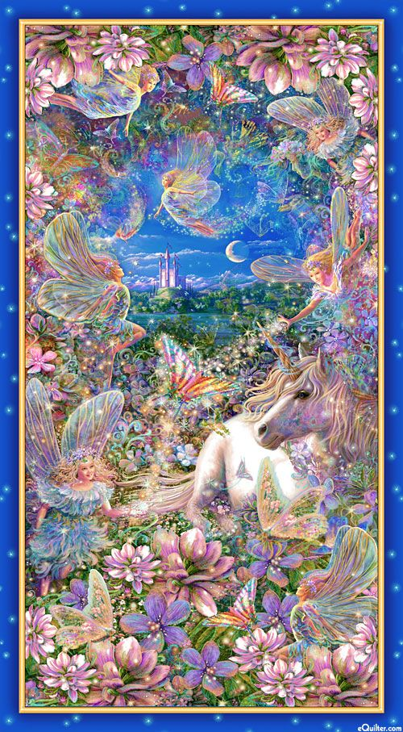
2.THE NATURAL ELEMENT
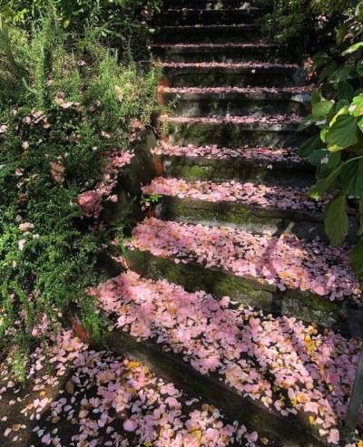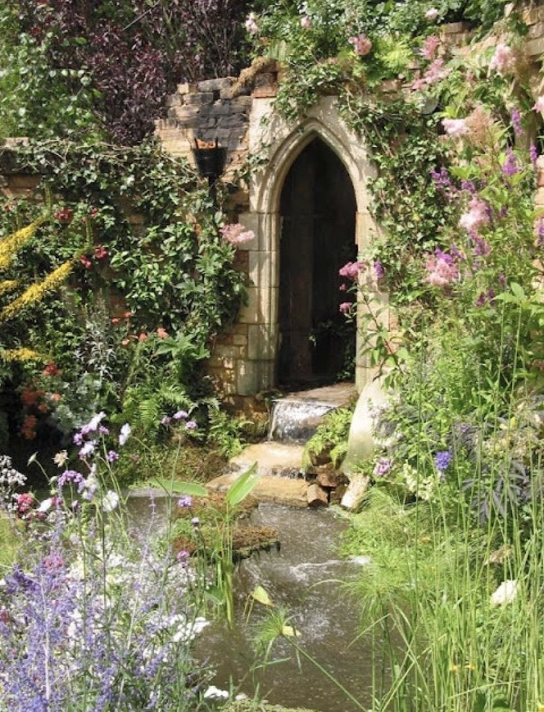
3.THE TRANSPARENT ELEMENT
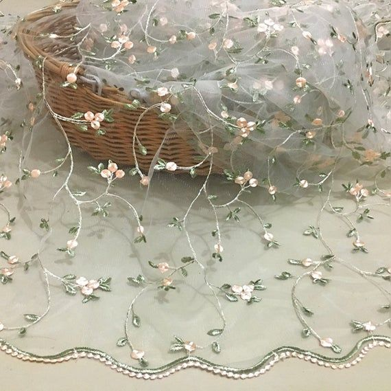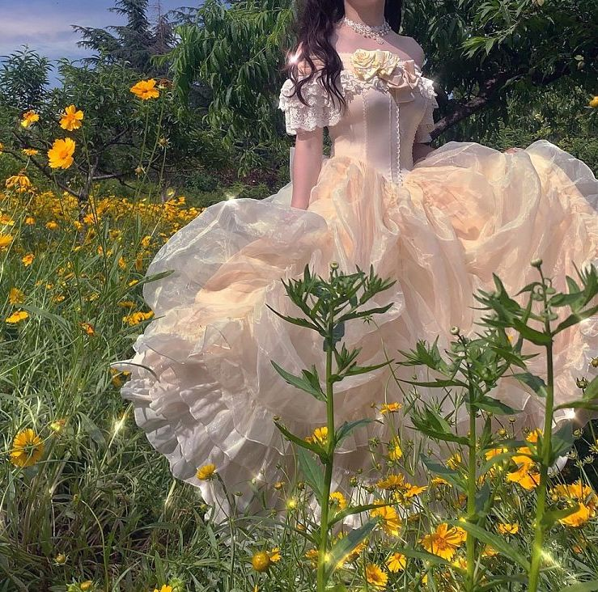
5.THE SPARKLING ELEMENT
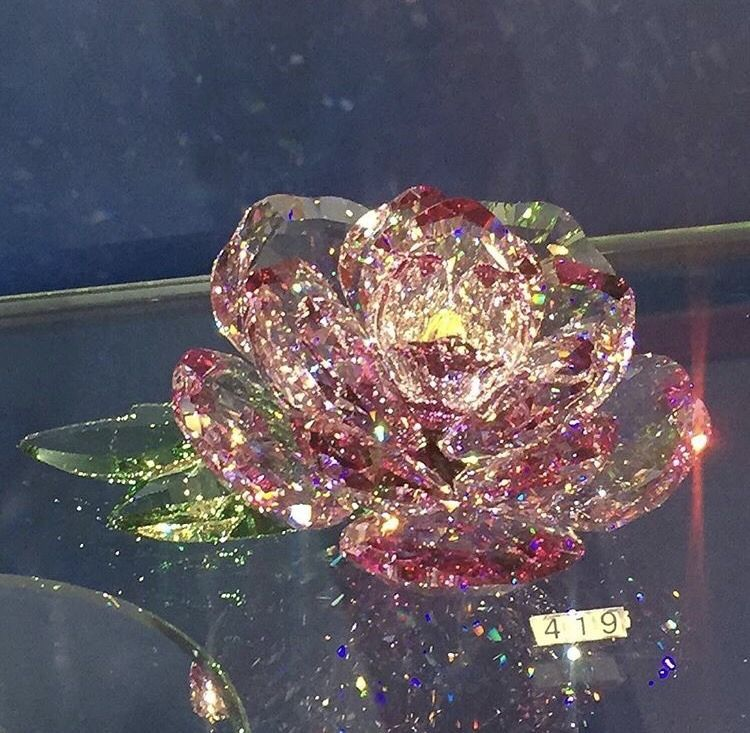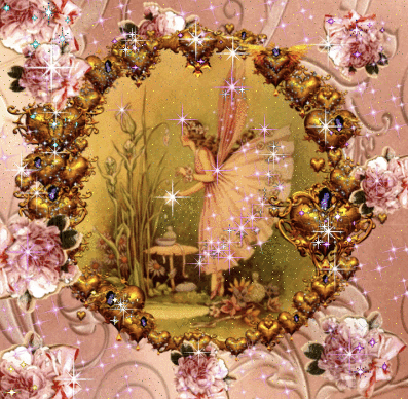
6.THE RURAL LIFE ELEMENT
<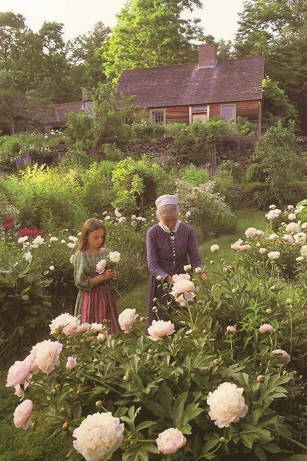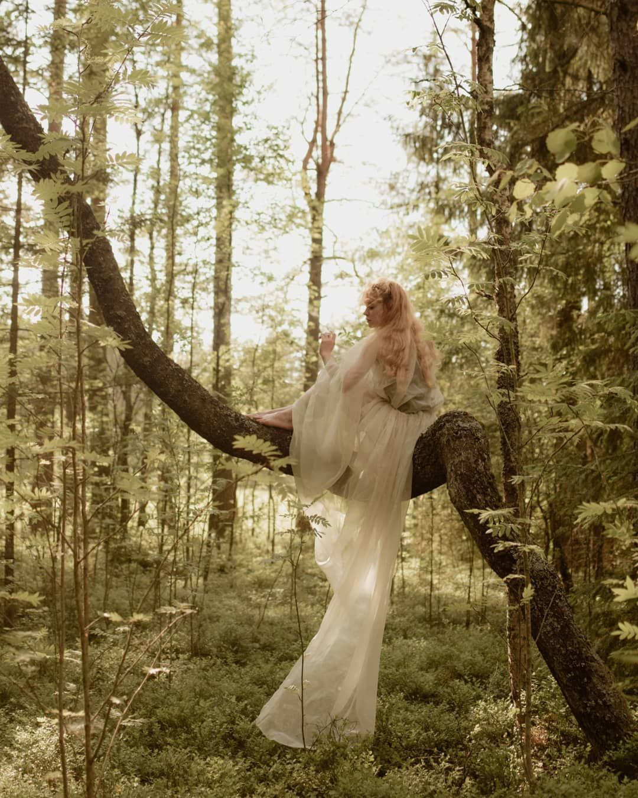
7.THE ANIMAL LIFE ELEMENT
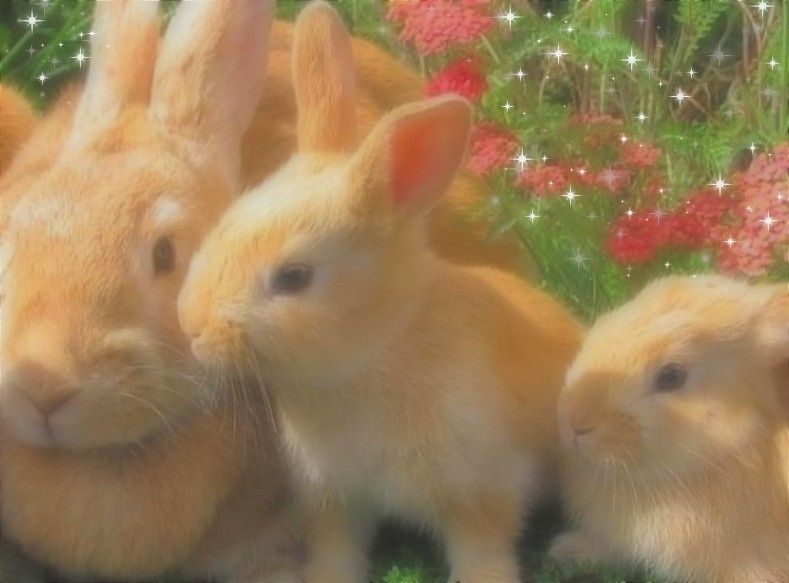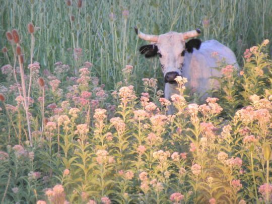
8.THE SPRING TIME ELEMENT
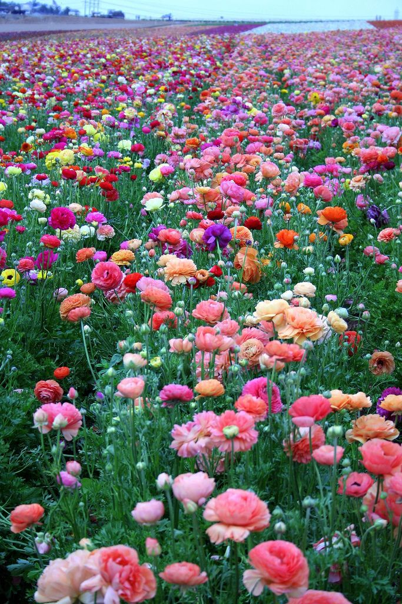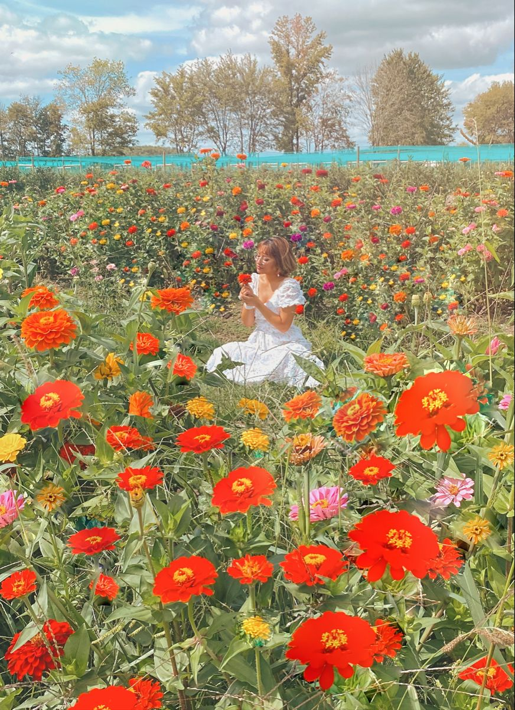
8.THE FAIRYTALE STORY BOOK ELEMENT
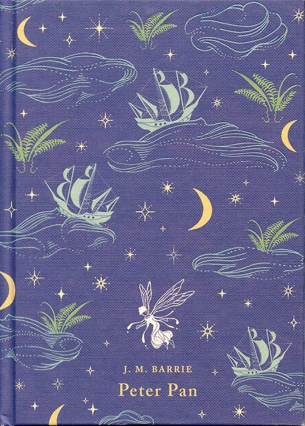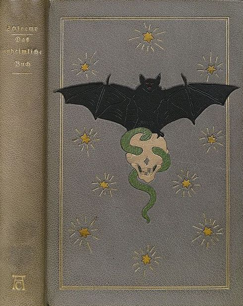
9.THE WHIMSICAL ELEMENT
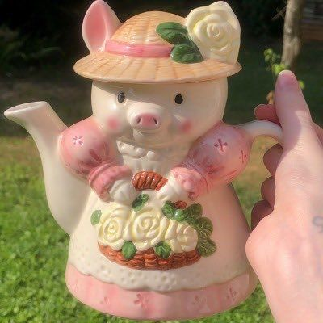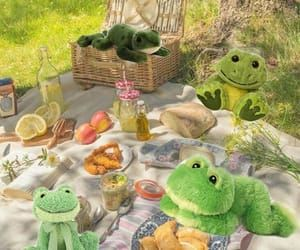
10.THE UNCANNY ELEMENT
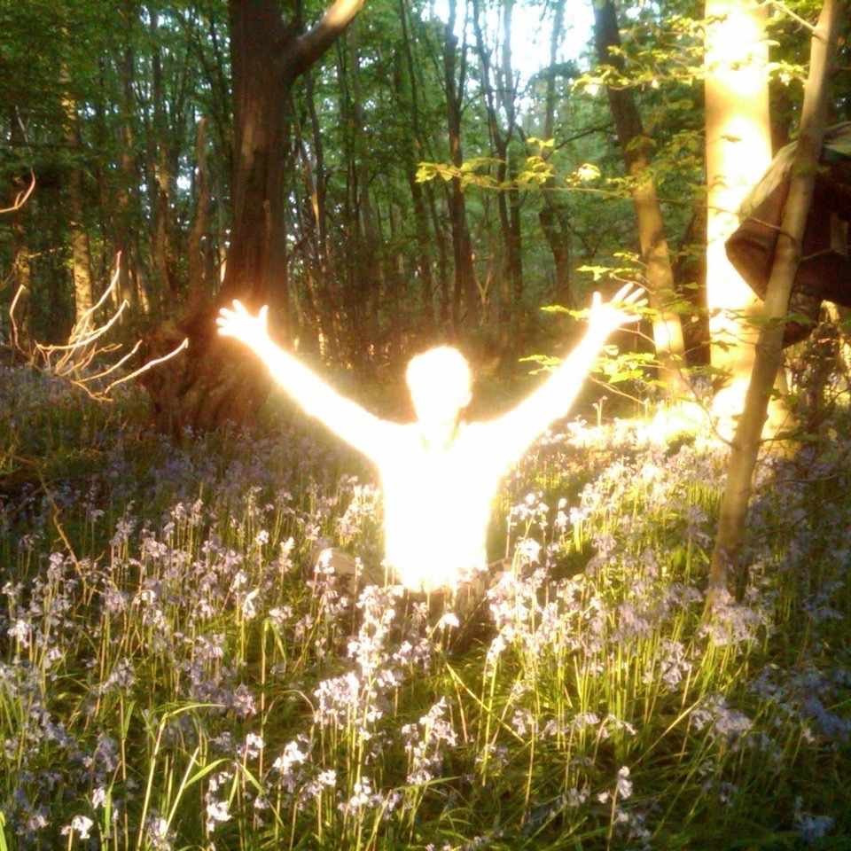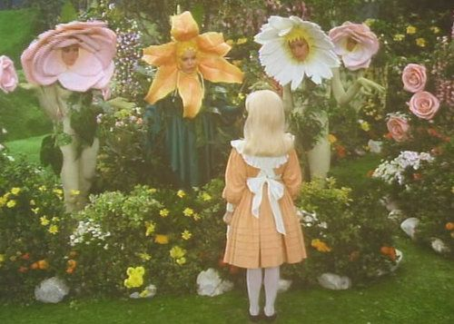
10 INTERACTION DYNAMICS OF THE FAIRYCORE AESTHETIC